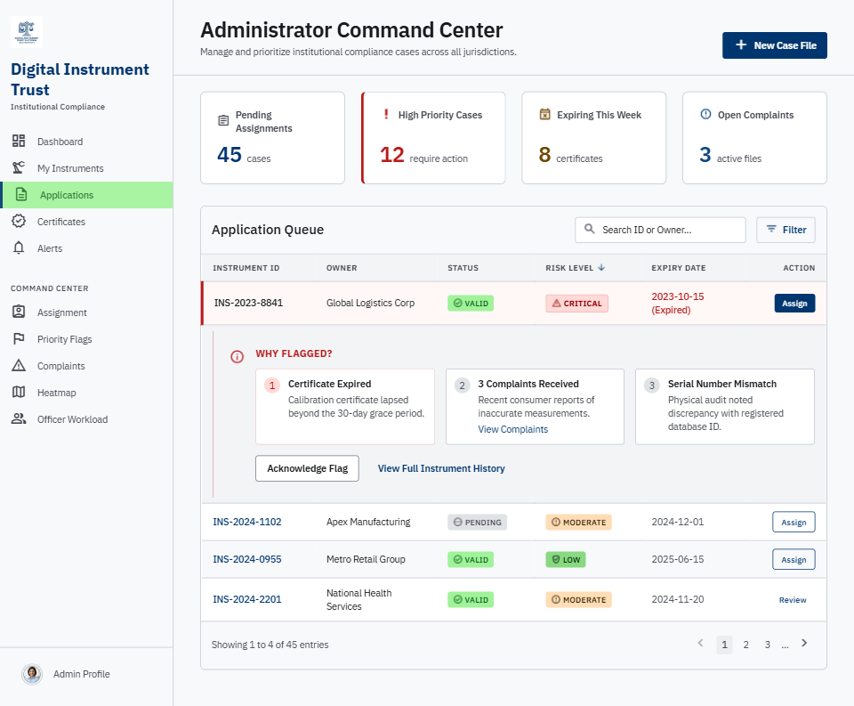
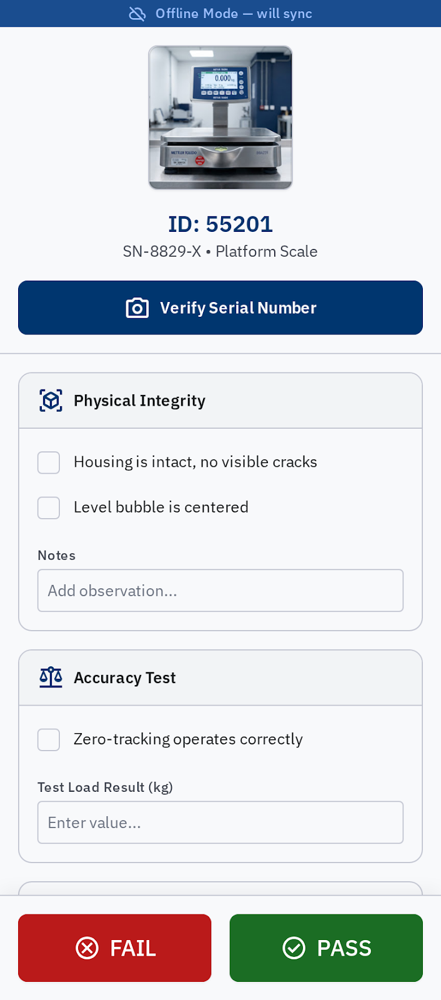
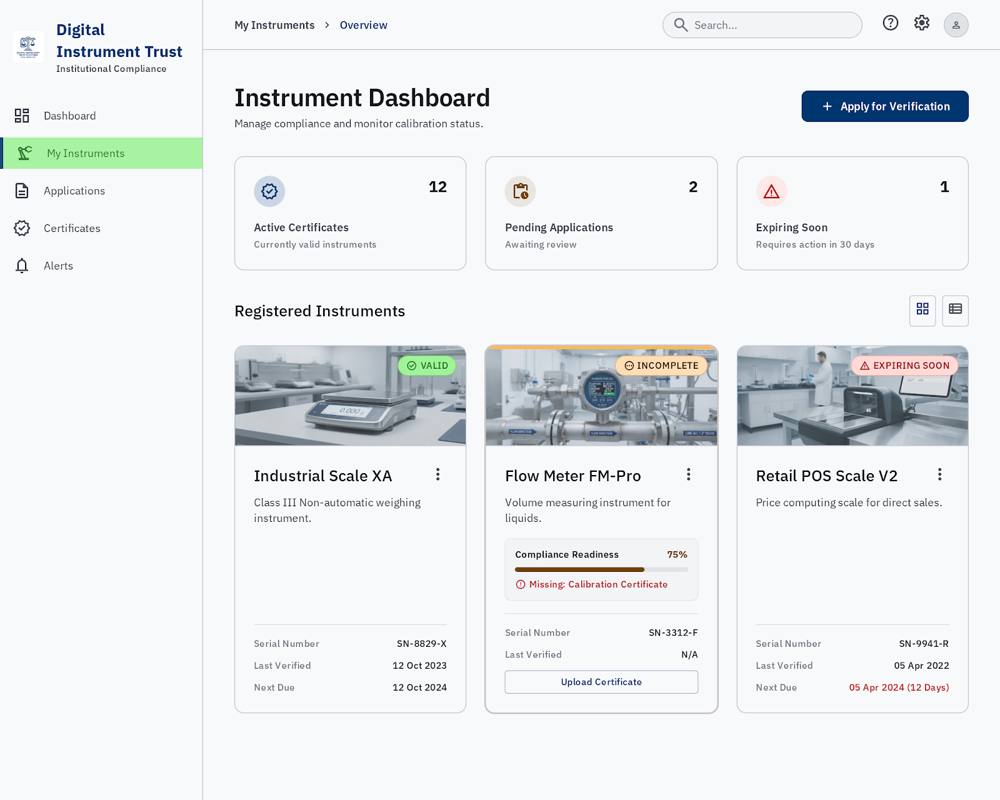
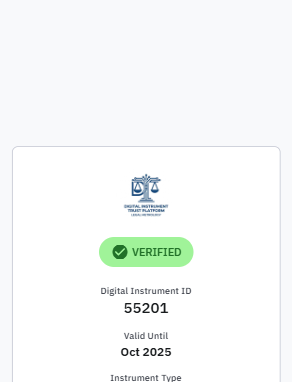

devices Interactive Application Modules
Click on any card to view the responsive interface

admin_panel_settings Institutional AdminAdministrator Command Center
Comprehensive regulatory oversight dashboard featuring nationwide KPI counters, priority risk flagging, dynamic inspector assignment, and compliance heatmaps.

camera_alt Offline-First Field ToolLMO / GATC Field Verification Tool
Field inspection interface with OCR serial matching, automated Maximum Permissible Error (MPE) checklist, physical tamper seal logging, and Pass/Fail issuance.

store Trader & Business PortalInstrument Owner Dashboard
Business portal for traders and weighbridge operators to manage scale fleets, track 75% compliance readiness progress, apply for re-verification, and download Form A certificates.

qr_code_scanner Citizen Consumer VerificationPublic QR Trust & Seal Verification
Consumer instant-scan interface showing government trust stamp, digital certificate validity, physical seal hash, and one-tap short-weight fraud complaint reporting.
Project Architecture & Technology Stack
This repository delivers the Smart India Hackathon (SIH 2026) Problem Statement #26036 solution for the Department of Consumer Affairs. It bridges permanent hardware digital identity with real-time verification lifecycles.